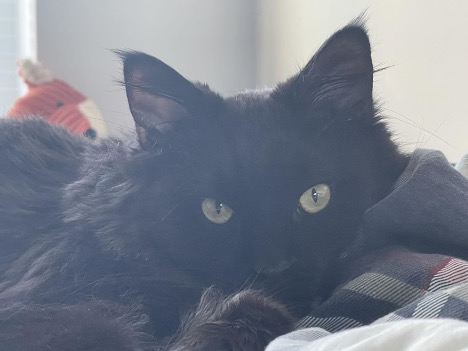

Bacon Q Dog

Bacon Q. Dog is a 9yr old labradoodle. He prefers to spend his days lounging among the three different beds/couches that his family has gifted him. He enjoys a walk or two around the neighborhood, as long as he can pretend that he doesn't see any of the other animals to avoid the embarrassment of not wanting to admit he has no wolf-like skills in chasing them.
At night just as the rest of the family is ready to relax, Bacon suddenly wants to release all of his energy. He will place his toys on a mini couch and frantically drag the couch around, giving his toys "a ride." There is also a lot of rolling. Lots and lots of rolling.
Photo Gallery


Likes
- Belly rubs
- Playing tug-of-war
- Sneaking onto the couch
Smoothie

Long-hair beautiful, orange tabby cat
Smoothie has been dubbed the "world's most photogenic cat", and her emerald eyes and golden fur have even inspired a mural in New Zealand. Smoothie also has an aptly-named brother named Milkshake, and the two are often featured together across social media platforms.
She became an internet sensation with 2.3 million followers on her smoothiethecat Instagram account
Photo Gallery


Rocket

Cute, small and yellow pomeranian
Rocket (also named Huihui) is a 6-month Pomeranian puppy with big eyes and a small, black cute nose. Rocket is named Rocket because he runs so fast and energetically all day without even having some rest. Rocket loves to carry his little toy around the house and jump towards my bed.
Rocket is friendly to all human beings. He may be a little shy at first, but he'll 'say hi' to you after a few seconds. He is also friendly to dogs, especially the small breed, because the large size dogs are hard for him to smell, lol. If you meet Rocket, don't hesitate to say hi to him!! He will be super happy the whole day.
Photo Gallery


Likes
- Chewing bones
- Running
- Chasing
Hua Hua
 Hua Hua is a three-year-old kitten with gray and black hair. She is a very fond cat, often coming to my desk to play with me when I do my homework. She also likes to rub my side when I watch TV or play mobile phone. At the same time, she is also very warm and gets along well with guests who come to our home to play.
Hua Hua is a three-year-old kitten with gray and black hair. She is a very fond cat, often coming to my desk to play with me when I do my homework. She also likes to rub my side when I watch TV or play mobile phone. At the same time, she is also very warm and gets along well with guests who come to our home to play.
Unlike other cats who are very afraid of getting out of the house, Hua Hua is very interested in exploring the outside world. Every time when my parents are preparing for a walk at the door, she will come and continue spinning, expressing her wish to go out with my parents.
Photo Gallery
Hua Hua curling up
Visual description of the image/movie: Hua Hua staring at you
Hua Hua coquetry

Hua Hua in her bed
Likes
- Chicken Breast
- Salmon
- Beef
Brul
Brown fuzzy cat
Brul is a 2-year-old Maine Coon cat. She prefers to spend her days lying in bed and enjoys watching outside from the window as long as there are no loud noises and bugs outside.
Brul loves walks on the beach and taking sun naps on a warm summer day. She is a playful cat but also enjoys slow, relaxed days. However, she hates grooming and bathing.
Photo Gallery


Likes
- Eating
- Sleeping
- Scratches